Maurício C. de Oliveira
Chapter 1: Introduction
linearcontrol.info/fundamentals
Block diagram
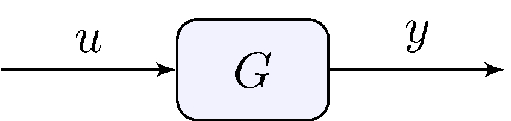
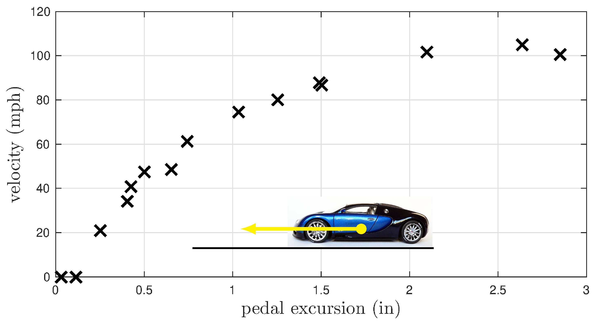
Curve fitting: \(y = \alpha \tan^{-1}(\beta u)\) (nonlinear)
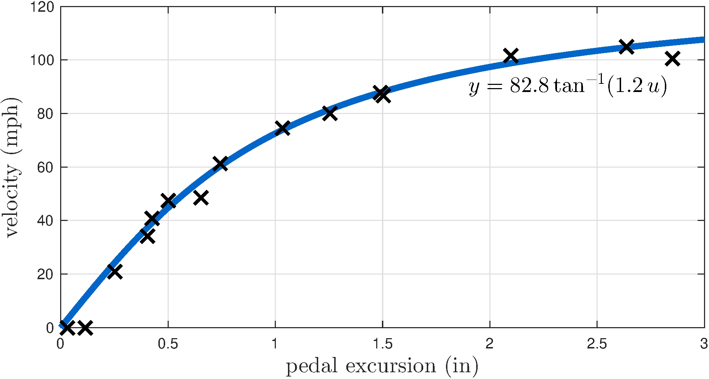
Curve fitting: \(y = \gamma u\) (linear)
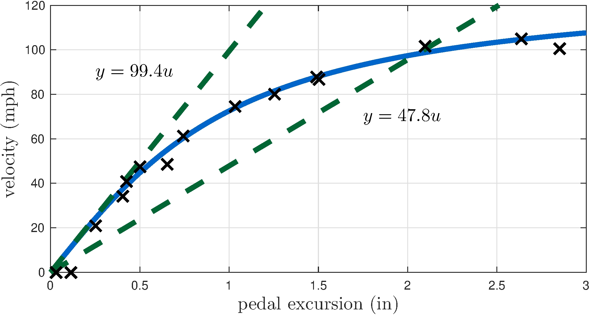
A model
Models can be
In this book
Tracking
Given a target terminal velocity, \(\bar{y}\), design a system, the controller, that is capable to command the accelerator pedal of a car, the input, \(u\), to produce a terminal velocity, the output, \(y\), equal to the target velocity?
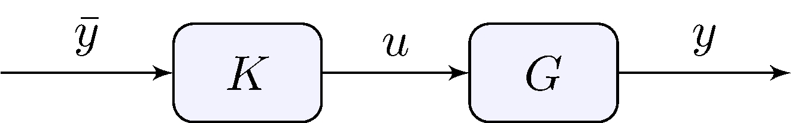
System model
\[\begin{align*} y &= G(u) \end{align*}\]
Open-loop controller
\[\begin{align*} u &= K(\bar{y}) \end{align*}\]
Solution
\[\begin{align*} K = G^{-1} \end{align*}\]
Controller is a function of the model
Uncertainty in the model increases uncertainty in the solution
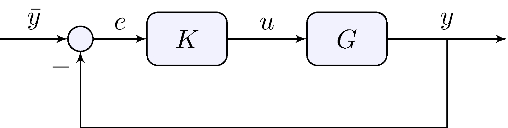
System model
\[\begin{align*} y &= G(u) \end{align*}\]
Feedback controller
\[\begin{align*} u &= K(\bar{y}, y) \end{align*}\]
Most common feedback controller
\[\begin{align*} u &= K(e), & e &= \bar{y} - y \end{align*}\]
\[\begin{align*} y &= G \, u, & u &= K \, e, & e &= \bar{y} - y \end{align*}\] Eliminate \(e\) and \(u\): \[\begin{align*} y &= G K e = G K (\bar{y} - y) & &\implies & (1 + G K) y &= G K \bar{y} \end{align*}\] If \(G K \neq 1\) \[\begin{align*} y &= H \bar{y}, & H &= \frac{G K}{1 + G K} \end{align*}\]
\[\begin{align*} y &= H \bar{y}, & H &= \frac{G K}{1 + G K} \end{align*}\]
\(K\) large means \(H \approx 1\)
Choice of \(K\) does not depend directly on value of \(G\)
\[\begin{align*} u &= K e = K (\bar{y} - y) = K (1 - H) \, \bar{y} = \frac{K}{1 + G K} \, \bar{y} = \frac{1}{K^{-1} + G} \, \bar{y} \end{align*}\]
\(K\) large means \(u \approx G^{-1} \bar{y}\)
Feedback loop learns \(G\)!
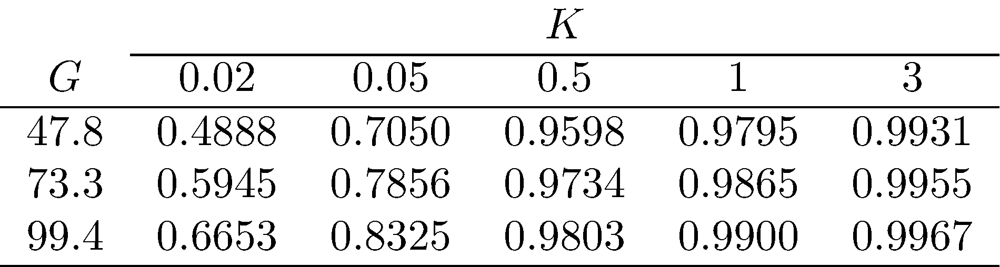
\(K = 0.5\) is already “large”
Value of \(H\) remain close to \(1\) even if \(G\) varies widely
Similar conclusions in the presence of “mild” nonlinearities
Transfer-function from reference to output
\[\begin{align*} y &= H(G) \, \bar{y} \end{align*}\]
open-loop: \(H(G) = G K\)
closed-loop: \(H(G) = \frac{G K}{1 + G K}\)
Sensitivity
\[\begin{align*} \frac{H(\bar{G}) - H(G)}{H(\bar{G})} &\approx S(\bar{G}) \frac{\bar{G} - G}{\bar{G}}, & S(G) &= \frac{G}{H(G)} H'(G) \end{align*}\]
open-loop: \(S(G) = 1\)
closed-loop: \(S(G) = \frac{1}{1 + G K}\)
Large \(K\) reduces closed-loop sensitivity
\[\begin{align*} y &= H \, \bar{y}, & H &= \frac{G K}{1 + G K} \end{align*}\]
\[\begin{align*} e &= \bar{y} - y = (1 - H) \, \bar{y} = S \, \bar{y}, & S &= \frac{1}{1 + G K} \end{align*}\]
Complementarity: \(S + H = 1\)
Large \(K\) improves tracking \(S \rightarrow 0\), \(H \rightarrow 1\)
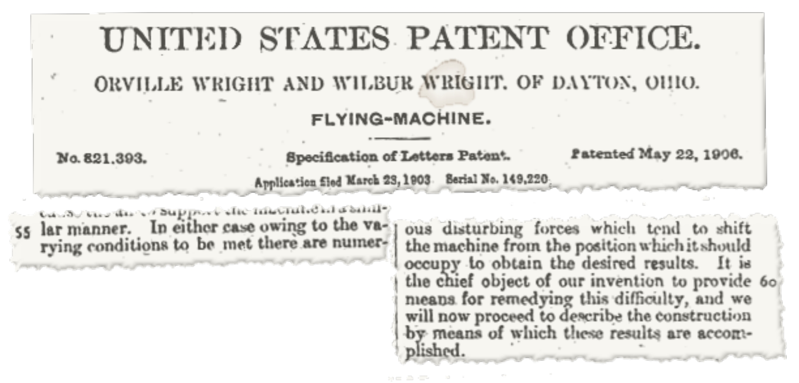
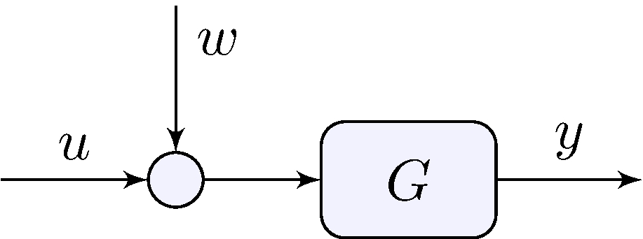
\[\begin{align*} y &= G (u + w) \end{align*}\]
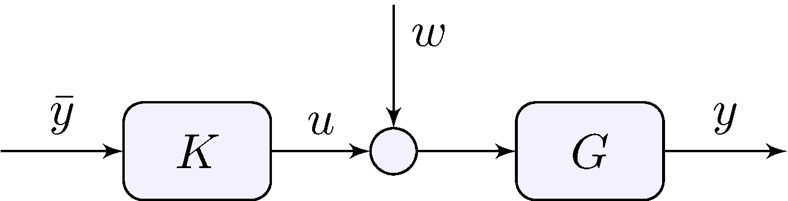
\[\begin{align*} e &= \bar{y} - y = \bar{y} - G (K \bar{y} + w) = (1 - G K) \bar{y} - G w \end{align*}\] If \(K = G^{-1}\) \[\begin{align*} e &= - G w \end{align*}\]
Open-loop system cannot reject disturbance
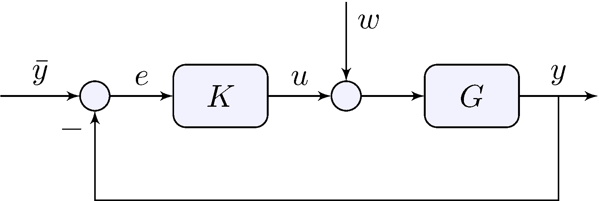
\[\begin{align*} e &= \frac{1}{1 + G K} \, \bar{y} - \frac{G}{1 + G K} \, w \end{align*}\]
\(K\) large makes both terms small
Feedback simultaneously tracks reference and rejects disturbances